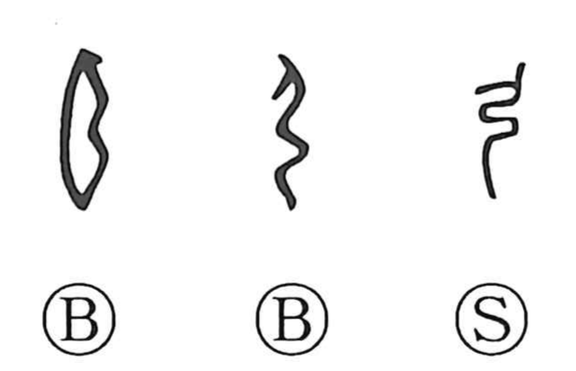

弓

Kun: yumi | On: kyu
bow
Explanation
A straightforward pictograph of a bow; early forms even show the bow strung. Many bow-shaped graphs share this contour and seem to echo, almost onomatopoetically, the sense of force and flexion. Because the human trunk is slightly arched, 弓 is included in 躬 “body.” In 射 “to shoot,” the element written like 身 originally depicts nocking an arrow on the bow, and with 手 (written 寸) it expresses shooting by hand. From this core image came terms for the bow’s parts: 弦 the string, 弭 the tip or nock, 幹 the bow’s body, 驸 the grip, 鍥 a bow-sickle, and 畏 the midpoint between the two bent limbs.